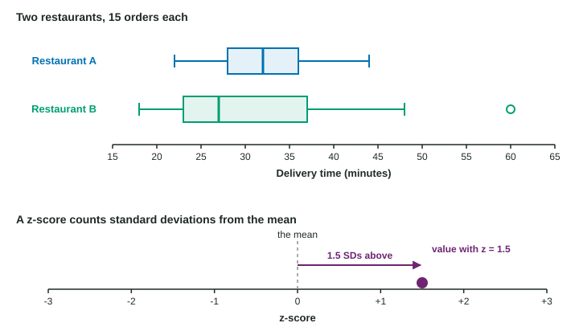

Most questions in statistics compare groups: do patients on a new schedule wait less? Is one bus route more reliable? This topic covers two kinds of comparison. First, comparing whole distributions, feature by feature. Second, comparing single values that come from different distributions, using z-scores and percentiles.
Comparing distributions
Put the groups on the same scale: parallel boxplots, dotplots stacked on one axis, or histograms with the same bins. Then compare every feature you would describe for one distribution:
- Shape: is one skewed and the other symmetric?
- Center: which has the greater median (or mean)?
- Spread: which is more variable (larger IQR or standard deviation)?
- Unusual features: outliers, gaps or clusters in either group.
The single most common lost point: listing numbers without comparing them. "Route 1’s median is 31 and Route 2’s is 28" describes; it does not compare. Use a comparing word: greater, less, more variable, less variable, similar.

Compare two distributions. A commuter timed 15 trips on each of two bus routes. Route 1 (minutes): , median 31, , whiskers from 24 to 39, no outliers. Route 2: , median 28, , whiskers from 18 to 45, one outlier at 62.
Shape: Route 2 is skewed right with a high outlier; Route 1 is roughly symmetric.
Center: Route 1 has the greater median travel time, 31 minutes against 28.
Spread: Route 2 is much more variable, with an IQR of minutes against minutes.
In context: "Trips on Route 1 have a greater median time than trips on Route 2 (31 against 28 minutes), but Route 2’s times are far more variable (IQR 15 against 6 minutes). Route 2 is skewed right with an outlier at 62 minutes, while Route 1 is roughly symmetric with no outliers."
A claim from the data: if the commuter must arrive within 40 minutes every day, Route 1 is the better choice, because all 15 of its trips took 39 minutes or less, while 3 of Route 2’s trips took more than 40.
One more trap: you cannot combine two groups by averaging their medians. The median of the combined data depends on every value and on the size of each group.
Relative position: z-scores
Ana scored 86 on a test in class A; Ben scored 88 on a different test in class B. Who did better? The raw scores cannot answer this, because the tests differ. What we can compare is how far each score stands above its own class, measured in a unit that adjusts for each class’s spread: the standard deviation.
The z-score of a value is
using the sample mean and standard deviation (or when the population values are known). It counts how many standard deviations the value is above (positive) or below (negative) the mean.
Compare with z-scores. Class A has mean 74 and standard deviation 8; class B has mean 81 and standard deviation 4.
Ana:
Ben:
Interpretation in context: "Ana’s score is 1.5 standard deviations above the mean score of class A, and Ben’s score is 1.75 standard deviations above the mean score of class B."
Conclusion: relative to his class, Ben did better. Ana is 12 points above her mean and Ben only 7, but class B’s scores vary less, so 7 points there is the larger achievement.
A z-score has no units, since the top and bottom of the fraction are in the same units. Converting heights from inches to centimeters leaves every z-score the same. You can also run the formula backward: the value with z-score when the mean is 60 and the standard deviation is 10 is .
Relative position: percentiles
A percentile is the other measure of relative position: a height at the 90th percentile of a class is at or above 90% of the heights in that class. Like a z-score, a percentile describes position within its own group. Kai at the 90th percentile of his class and Lena at the 85th percentile of hers does not tell you who is taller in centimeters.
| z-score | Percentile | |
|---|---|---|
| Tells you | standard deviations above or below the mean | percent of values at or below |
| Needs | the mean and standard deviation | the ordered data |
| Sign | negative below the mean | always from 0 to 100 |